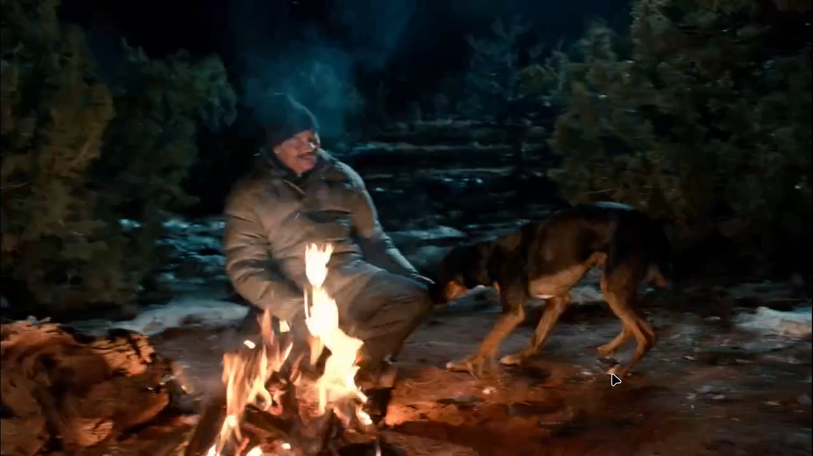
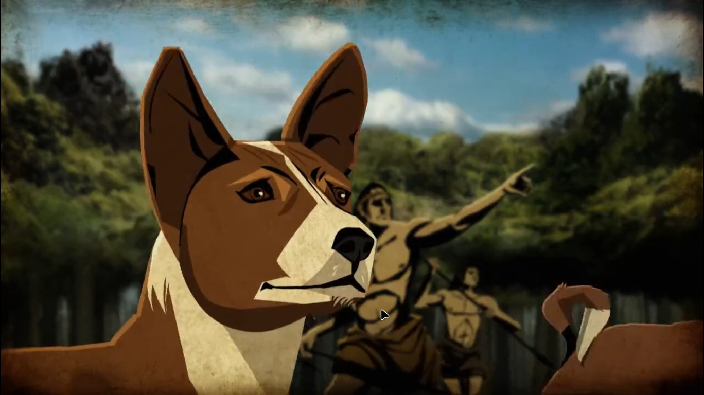
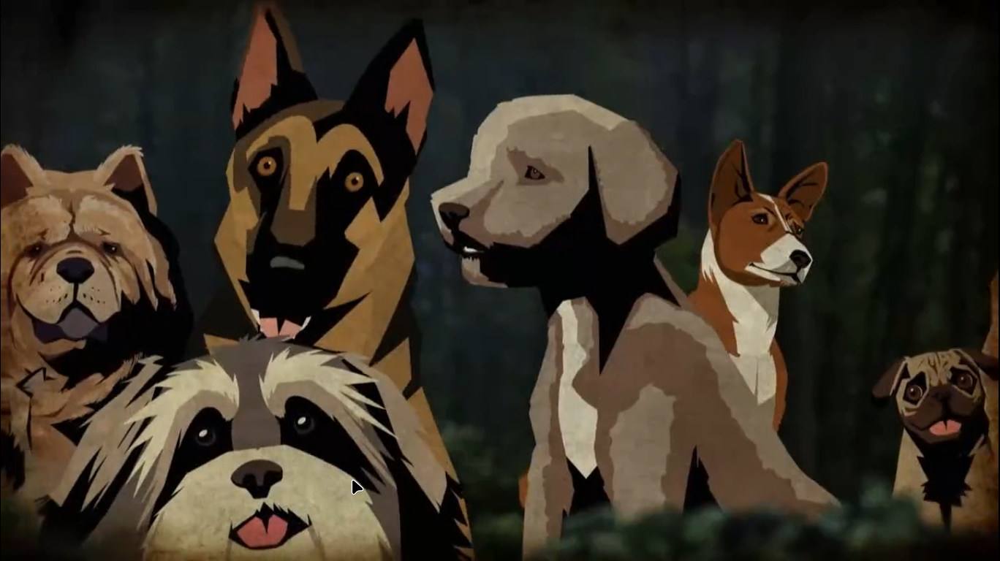
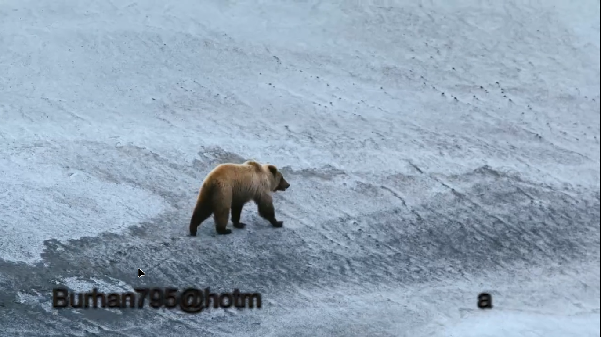
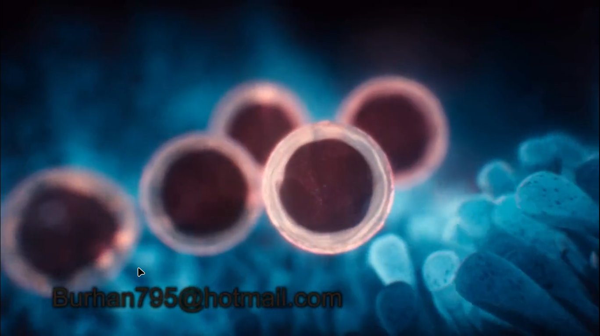
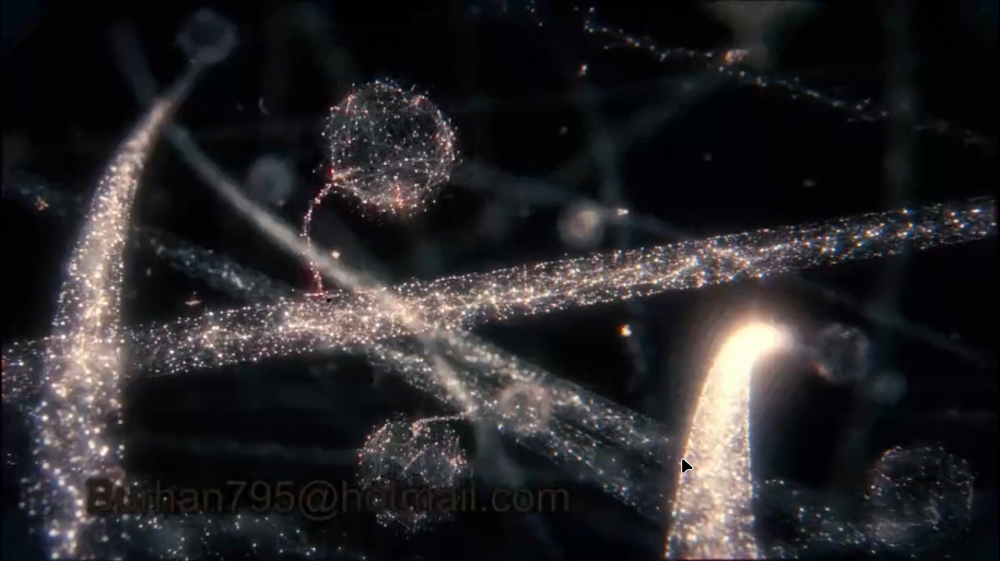
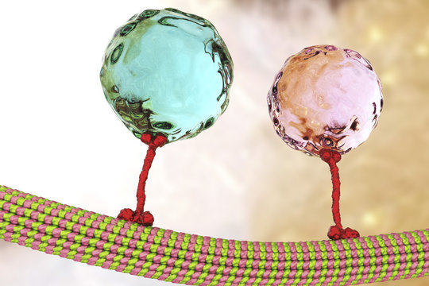
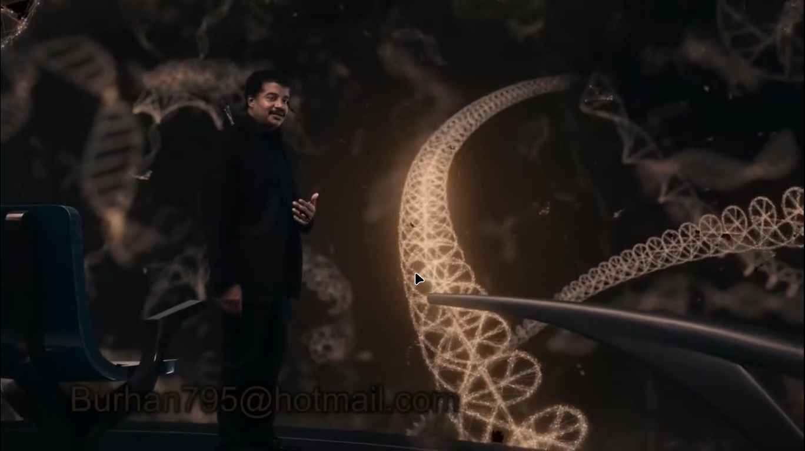

Question : why so many types of life exist in this planet: butterfly , whales , seahorses , turtle , trees
Question : why not there is only one type of life in this planet from where all these types of species have come from
ANSWER : [ Evolution ], [ Natural Selection] , [ Diverse Environments ] , [ Genetic Drift and Speciation ]
Evolution ::The gradual change in organisms over time through genetic variations and natural selection.
Example : Over millions of years, species like horses have evolved from small, multi-toed ancestors into large, single-toed creatures adapted for running on open plains. This transformation occurred through a series of gradual changes in their genetic makeup.
Environment :: The surroundings and conditions in which organisms live, including factors such as climate, geography, and resources.
Example : Penguins thrive in cold, Antarctic environments where their streamlined bodies, thick blubber, and waterproof feathers help them survive in icy waters. In contrast, cacti have adapted to arid desert environments by developing succulent stems to store water and spines to reduce water loss and deter herbivores.
Natural Selection :: The process by which organisms with advantageous traits are more likely to survive and reproduce, leading to the increased prevalence of those traits in subsequent generations.
Example : The long neck of giraffes is a result of natural selection. In habitats with limited foliage at ground level, giraffes with slightly longer necks could reach higher leaves, giving them a survival advantage and higher reproductive success, leading to the evolution of longer-necked giraffe populations over time.
Speciation :: The formation of new species through genetic changes and reproductive isolation, resulting in populations that are distinct from one another and cannot interbreed.
Example : Darwin's finches in the Galapagos Islands provide an example of speciation. The finches originated from a common ancestor but, due to geographic isolation and different food sources on different islands, their beak shapes diversified to suit specific diets, leading to the formation of multiple distinct finch species.
Story of Dogs
-30K years dog's didn't existed at all . at that time all the animals were wild .our ancestors lived below open sky .Where they had more food ,they stayed longer .{for them earth means ENTIRE PLANET}
All wolves want food , most of them are scared of comming close to humans (becuase they have more stress hormones in their blood)
Due to natural reasons some wolves have less stress hormones ,they are not that much scared of humans.
Some wolves choose to become domestic : let humans hunt and eat the leftovers of human food .{that was good strategy for them it increasd their chance of survival .}{The decision to become more friendly with humans increased with each generation (until that branch of wolves became dog)} {survival of the friendliest}
Dog were good to humans : security , clean the area ,protect against other animals
{Benefits of Being Cute } Friendly humans ,more chance of survival , inital mutal trade changed to deep friendship over time
WOLVES TRADED THEIR FREEDOM WITH FOOD ,LIFE
{ ARTIFICIAL SELECTION or BREEDING} Those dog were killed who ,attacked their masters ,only friendly breedings were allowed
For the first time humans have taken control of breeding , since then we have done this with plants and animls
Think about it : all the variety of dogs that we see around us is created by humans in the last 15-20K years
Think about it : all the plants including wheet that we eat ,is modified by humans from some wild plant .
Rest of the species where there is no human touch ,is shaped by NATURAL SELECTION
FACT : We are living is ice age since 20L years
Lets study this bear
Eggs of this bear
Let's go to the molecular level :
these are proteins : called Kinesins they do the transport work
Kinesin is a type of motor protein that plays a key role in intracellular transport, specifically in the movement of organelles, vesicles, and other cellular components along microtubules. While kinesin is a ubiquitous protein found in many types of cells, it is not present in every single cell.
Center of Life is in nucleus : DNA
DNA is coded in a language : that all living beings can read
DNA is a molecule ,made up of 4 types of smaller molecules(these are the letters of our genetic alphabets)(coding is the permutation and combination of these 4 molecules)
Instructions like : eating ,walking, digesting ,reproduction

DNA molecule is a machine that is made up of crores of parts called atoms
Every living thing is a little universe

Genes are copied in from cell to cell ,that are passed from one generation to another

There is kind of a proof reading is done at the time of cell copy , but some mistakes are still left
these changes can increase the chance of survival and reporduction


{ NATURAL SELECTION } NATURE ONLY CHOOSE THE SPECIES THAT ARE MORE CAPABLE OF SURVIVAL
these white and black bear seperated over thousands of years can became different species : this is the meaning of charles darwin's ORIGIN OF SPECIES
No single bear changes ,it takes generations of bear to make a new species
We know we are close to chimps ,what about trees
This is oak tree's DNA
This DNA's code tells the tree : how to matabolize sugar

This tree and us are long seperated ancestors

Thse small changes in A,T,G,C makes all the difference between us and tree ,between octopus and owl

IF YOU DON'T HAVE AN IDENTICAL TWIN ,THEN NO TWO LIVING BEINGS CAN HAVE SAME DNA
the difference in the DNA is the root reason for the natural selection
All the species are similar in terms of breaking down sugar,because this is essential for survival
Tree of life : similar genes same branch

Due to evolution ,this owl is looking similar to the tree

Science tells us that all the life is same , there is no master designer that is designing all the variety of species

Let's discuss about the Eyes
Initially life cannot see , over crores of years some bacteria got some light sensetive changes in their genes

Those bacteria who have got the change ,, able to see difference between day and night ,,were in big advantage
In water refrection happens ,so when animals can from water to land they were not immediately able to adapt , it took generations
WITHOUT EVOLUTION ,THERE IS NO MEANING IN BIOLOGY ,,THEORY OF EVOLUTION IS AS REAL AS THEORY OF GRAVITY
Halls of Extinctions {5 times in 5 crore years} ,Great Dying
Maybe total number of present species are less then 1000X of what was once there
Tardigrade/water bear : Have survived all 5 great Extinctions

Think about the life forms on planets that have completely different chemistry then earth
Biologists think that Titan's hydrocarbon {Titan has oceans of oil and natural gas{compared to this earth have tiny quantity}} lakes can have life
Except earth : only in titan rain happens